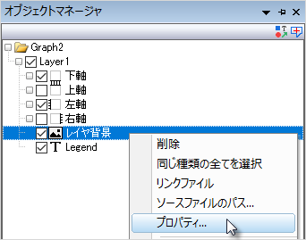

FAQ-1068 グラフの背景画像を挿入してレイヤとスケールにリンクさせるにはどうすればいいですか？
insert-graph-background-image-to-scale
最終更新日：2024/12/05
Origin 2025以降のバージョンの場合
- グラフウィンドウをアクティブにして、挿入：ファイルからの画像を選択し、画像ファイルを開きます。
- 挿入された画像上で右クリックし、レイヤの背景として設定を選択します。
注意点が2つあります：
- 画像をレイヤの背景として設定した後は、オブジェクトマネージャからのみ画像ウィンドウを開くことができます。必ずグラフオブジェクトの表示モードをオンにした状態で、「レイヤ背景」をダブルクリック（または右クリックして「プロパティ...」を選択）すると画像を操作できます。

- 画像はレイヤの背景として設定されているため、レイヤのサイズを変更すると、画像は軸スケールでリサイズ/クリップされます。
Origin 2022から2024bまでのバージョンの場合
- グラフウィンドウをアクティブにして、挿入：ファイルからの画像を選択し、画像ファイルを開きます。
- 挿入した画像をダブルクリックすると、別のイメージウィンドウを開くことができます。
- イメージウィンドウで開いた画像上で右クリックしてレイヤ背景として設定を選択します。
Origin 2021bの場合
- グラフウィンドウをアクティブにして、挿入：ファイルからの画像を選択します。レイヤ背景として挿入しますか？という確認メッセージが表示されます。
- はいと回答すると、背景画像として挿入され、レイヤスケールにリンクします。画像は選択状態にできないので注意してください。
- いいえをクリックすると、画像はグラフページ上のオブジェクトとして挿入されます。画像は選択可能で、移動、サイズ変更はもちろん、オブジェクト表示属性ダイアログで設定変更可能です。
Origin 2021以前のバージョンの場合
OriginにはinsertImg2gという、グラフウィンドウに画像を挿入する際に使用するXファンクションがあります。これは主にOriginのGoogle Map Import Appをサポートするために実装されましたが、単独で使用して、ラスターイメージをグラフの背景に挿入し、画像を含むレイヤのスケールにロックすることができます。
- 画像をインポートすると、軸スケールを変更すると画像がトリミングされるため、必要に応じて事前に軸スケールを調整してください。
- スクリプトウィンドウ（ウィンドウ：スクリプトウィンドウ）を開き、次の2行のコードを入力してから、両方を強調表示してEnterキーを押します。
dlgfile g:="*.PNG"; //サポートされているラスターファイル形式を.PNGに置き換えることができます
insertImg2g type:=img xyp:=2;
- 開くダイアログで、画像ファイルを選択するように求められます。OKをクリックすると、画像が次の条件でグラフの背景に挿入されます。
- 画像はデータの後ろに配置され、選択できません。
- 画像はストレッチモードでレイヤとスケールに接続します。
- 画像の寸法はレイヤの軸のスケール範囲と同じになります。
キーワード:ラスター、画像の挿入、レイヤとスケール、 オブジェクトの接続